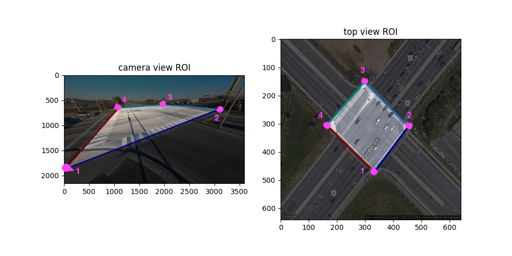

Counting Guide#
This pipeline supports:
Categorizing vehicles into 12 categories at Intersections
NOTE: before running any functionality of the pipeline makesure to format data according to our requirements.
NOTE: there is a full-functionality template in run.py.
Region of Interest (ROI)#
Our counting method is mostly based on a manually selected ROI.The ROI is a list of coordinates on a frame of video(image coordinates(x, y)).
ROI should be added in the <VideoName>.metadata.json.
To visualize the ROI you can run,
python3 main.py --Dataset={src} --VisROI --TopView=<TopView>
Results will be stored under src/Results/Visualization/*.[pkl/txt]

To get a consistent result, select the four corners of intersection starting with the south-west corner and continuing counter clock-wise. Following this procedure you will the get the following mapping between MOIs and directions.
MOI |
Approach |
turn |
|---|---|---|
1 |
South |
Left Turn |
2 |
South |
Through |
3 |
South |
Right Turn |
4 |
East |
Left Turn |
5 |
East |
Through |
6 |
East |
Right Turn |
7 |
North |
Left Turn |
8 |
North |
Through |
9 |
North |
Right Turn |
10 |
West |
Left Turn |
11 |
West |
Through |
12 |
West |
Right Turn |
Prototype Selection#
As the first option you can manually select the prototypes for each Movement of Interest. This command will pop-up a GUI based on QT5 and OpenGL allowing you to label tracks.
python3 main.py --Dataset={src} --Detector={det} --Tracker={tra} --TrackLabelingGUI
Results will be stored under src/Results/Annotation/*.mp4
See a sample of working with the GUI below.
./Assets/ClusterlabellingGUI.mp4
As an alternative you can select prototypes based on how they interact with ROI. Simply we have a set of constraints which some tracks pass. We then cluster those tracks based on their starting and ending points. For automated prototype selection, run
python3 main.py --Dataset={src} --Detector={det} --Tracker={tra} --ExtractCommonTracks\
--ResampleTH=<TH> --TopView=<TopView>
Results will be stored under src/Results/Annotation/*.mp4
After prototype selection is completed(by either method), you can run the following to visualize them.
python3 main.py --Dataset={src} --Detector={det} --Tracker={tra} --VisLabelledTrajectories
Results will be stored under src/Results/Visualization/*.mp4
Coutning#
To count object one need to set a --CountMetric={metric} in the args.
Here is a table of supported metrics. The metrics have two versions, the ones starting with ‘g’ work on ground plane.
Metric |
Explaination |
|---|---|
“groi” / “roi” |
decide based on ROI interactions(eg start point) |
“gknn” / “knn” |
decide based on knn of prototypes |
“gcos” / “cos” |
decide based on angular distance to prototypes |
“gcmm” / “cmm” |
decide based on countur min matching algo |
“ghausdorff” / “hausdorff” |
decide based on hausdorf distance of tarcks to prototypes |
“gkde” / “kde” |
decide based on kernel density estimation of prototypes |
To execute counting you can run,
python3 main.py --Dataset={src} --Detector={det} --Tracker={tra} --Count\
--CountMetric={metric} --ResampleTH=<TH> --TopView=<TopView>
To evaluate your counting algorithm you can run,
python3 main.py --Dataset={src} --Detector={det} --Tracker={tra} --EvalCount\
--CountMetric={metric} --ResampleTH=<TH> --TopView=<TopView>
There is support for storing the counter for future use. To store a counter from your data you can run,
python3 main.py --Dataset={src} --Detector={det} --Tracker={tra} --Count --CacheCounter\
--CountMetric={metric} --ResampleTH=<TH> --TopView=<TopView>
There is support for counter visualization. This is most of the time plotting decisionn boundaries. You can also visualize how the counter decided for each query track
python3 main.py --Dataset={src} --Detector={det} --Tracker={tra} --CountVisPrompt --CountVisDensity\
--Count --CountMetric={metric} --ResampleTH=<TH> --TopView=<TopView>
As a final visualization, you can show counting ids, track ids, and more by running
python3 main.py --Dataset={src} --Detector={det} --Tracker={tra} --CountMetric={met} --VisTrackMoI
All of the counting results will be stored under src/Results/Counting/ And visualization results will be stored under src/Results/Visualization/